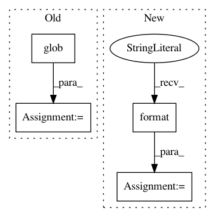

278c7a91b77448236af73d6942da425a5d5a2e34,datasets/preprocess.py,,mozilla,#Any#Any#,44
Before Change
def mozilla(root_path, meta_files):
Normalizes Mozilla meta data files to TTS format
import glob
meta_files = glob.glob(root_path + "/**/batch*.txt", recursive=True)
folders = [os.path.dirname(f.strip()) for f in meta_files]
items = []
for idx, meta_file in enumerate(meta_files):
folder = folders[idx]
// txt_file = os.path.join(root_path, meta_file)
After Change
for line in ttf:
cols = line.split("|")
batch_no = int(cols[1].strip().split("_")[0])
wav_folder = "batch{}".format(batch_no)
wav_file = os.path.join(root_path, wav_folder, "wavs_no_processing", cols[1].strip())
text = cols[0].strip()
items.append([text, wav_file])
return items
In pattern: SUPERPATTERN
Frequency: 3
Non-data size: 4
Instances
Project Name: mozilla/TTS
Commit Name: 278c7a91b77448236af73d6942da425a5d5a2e34
Time: 2019-04-28
Author: egolge@mozilla.com
File Name: datasets/preprocess.py
Class Name:
Method Name: mozilla
Project Name: pantsbuild/pants
Commit Name: dfd7f7381323b1c66f1f8705a6196c5bae0197c8
Time: 2018-07-17
Author: 1305167+cosmicexplorer@users.noreply.github.com
File Name: tests/python/pants_test/backend/python/tasks/test_ctypes_integration.py
Class Name: CTypesIntegrationTest
Method Name: test_binary
Project Name: mseitzer/pytorch-fid
Commit Name: 2313fbdad72507c0af7daaf43d1887fc95453762
Time: 2020-11-30
Author: 16725193+mseitzer@users.noreply.github.com
File Name: src/pytorch_fid/fid_score.py
Class Name:
Method Name: _compute_statistics_of_path